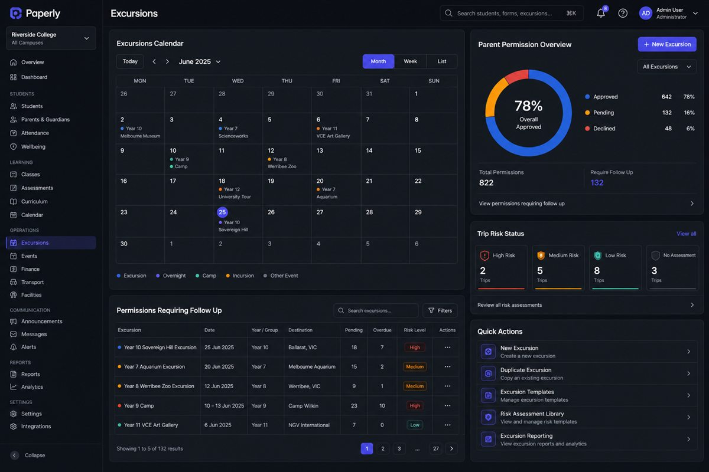
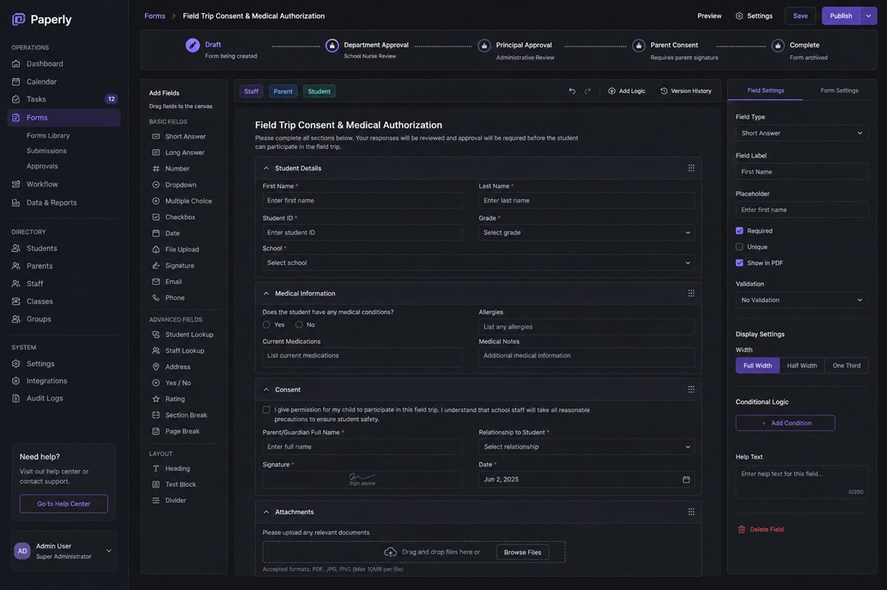
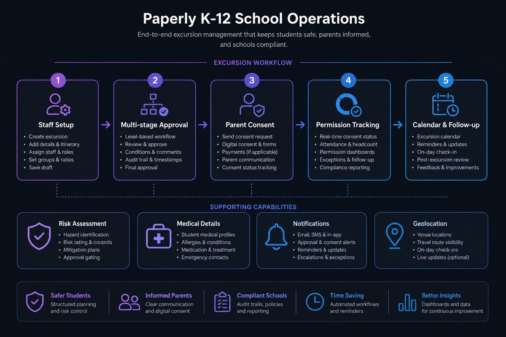
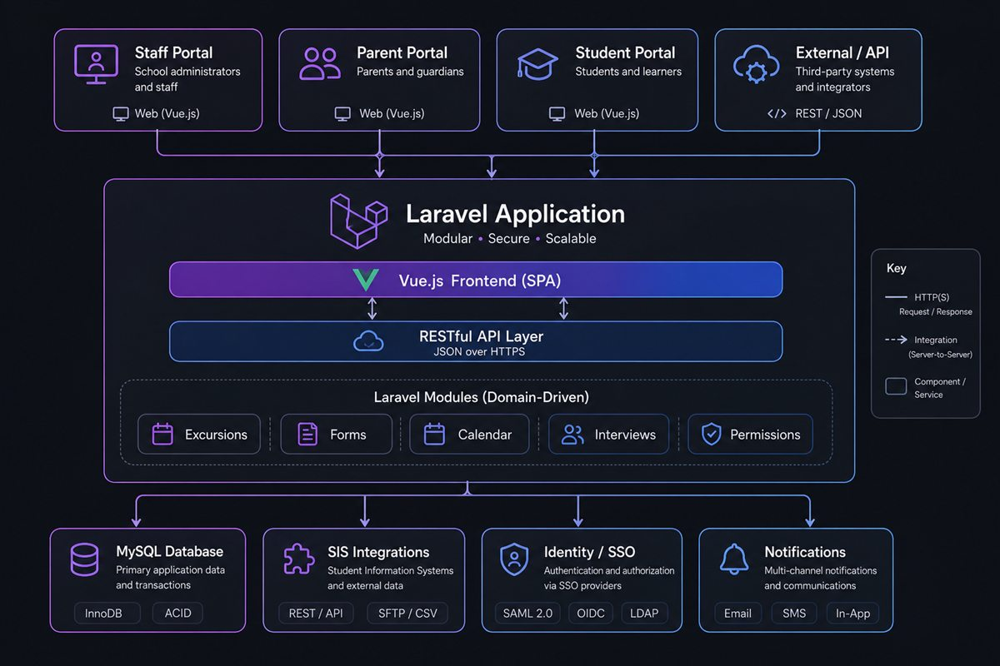

Featured case study · 01 · EdTech · Australia · 2022–Present
Paperly — K-12 school operations at production scale

01 Context
Paperly is a cloud-based K-12 school operations and workflow platform. It sits beside a school’s SIS and LMS — digitising the operational work that those systems are not built for: trips and excursions, digital forms, compliance, risk assessments, announcements, approvals and parent/staff communication.
It serves independent schools, government schools, Catholic/Diocesan systems and multi-campus organisations. Public product materials list integrations with systems such as Synergetic, TASS, Schoolbox, Veracross, SEQTA, Wonde, Digistorm and Microsoft identity services.
The product codebase is a modular Laravel + Vue.js application with role-specific portals (staff, parent, student, external), REST APIs, MySQL, and an abstraction layer for school management system (SIS) sync.
02 Product visuals
Illustrative product mockups based on the verified capabilities and architecture. They use representative sample data rather than production school records.




03 Responsibility
I joined as a Senior Web Application Developer and have worked remotely with the Perth-based team since July 2022. This is my strongest recent production experience — end-to-end feature work on a live multi-school platform, not a greenfield demo.
- Built and maintained school administration modules used daily by teachers and parents across Australian schools.
- Delivered excursion / trip workflows, sports and music coordination, parent-teacher interviews and assessment calendars.
- Implemented dynamic form builders, multi-step approval workflows and notification-driven submission lifecycles.
- Owned permissions and role boundaries across administrators, staff, parents and students in a multi-school context.
- Designed REST APIs and MySQL schemas; integrated third-party SIS/LMS and identity services in Agile production releases.
- Supported geolocation-enabled activity workflows and ongoing production debugging, testing and delivery.
04 Challenges
- Dynamic workflows — reusable form and approval logic that still matches each school’s process, not a one-size-fits-all screen.
- Complex permissions — correct capability boundaries for admins, teachers, parents, students and external users without leaking cross-school data.
- SIS / third-party sync — keeping people, classes, medical and contact data accurate while schools run different student information systems.
- Geolocation & activity ops — location-aware excursion and activity flows that remain usable for non-technical staff.
- Production reliability — shipping continuously into a live multi-school platform used every school day.
- Remote collaboration — senior delivery across timezones with a Perth-based product and engineering team.
05 Solution
School operations were modelled as composable modules behind role portals: staff configure and approve; parents consent and submit; students participate where needed. Laravel services and repositories own domain rules; Vue.js surfaces handle dense calendars, forms and permission follow-up; REST APIs and SIS clients keep external data in sync.
Excursion & permission flow
Typical excursion path: staff configure → internal approvals → parent digital consent → permission tracking → operational calendar.
Module map
06 Architecture
Paperly is organised as convention-based modules (controllers, models, services, repositories and role-scoped routes per domain). Clients hit role portals; Laravel owns business logic; MySQL persists school data; SIS and identity clients keep external systems aligned.
Role portals share one modular Laravel/Vue core with MySQL, SIS sync, identity federation and notification channels.
Integration surface
School data sync is abstracted behind a school-management interface so the same modules can run against different SIS products. Public Paperly materials and the product integration surface include Synergetic, TASS, Veracross, SEQTA, Schoolbox, Wonde, Digistorm and Microsoft identity — plus payments and venue/contractor tooling where schools need them.
07 Outcomes
Four years of stable senior delivery on a live education SaaS: workflow-heavy modules shipped and supported in production, used daily by thousands of teachers and parents. Paperly publicly states that more than 250 schools joined for 2026 and beyond.
The work is a strong reference for senior Laravel/Vue production ownership — multi-role portals, approval workflows, permissions, SIS integrations and continuous delivery in a regulated school environment — not just a technology list.
08 Technology
- Backend: Laravel (PHP), MySQL, REST APIs, modular services/repositories, queued jobs where workflows need them
- Frontend: Vue.js, JavaScript — staff/parent/student portal UIs for calendars, forms and permissions
- Domain: excursions, form builder, calendars, parent-teacher interviews, cocurricular, policies, enrolment, permissions
- Integrations: SIS/LMS clients (e.g. Synergetic, TASS, Veracross, SEQTA, Schoolbox, Wonde), identity federation, notifications
- Delivery: Agile production releases, remote collaboration, debugging and ongoing support on a multi-school live platform